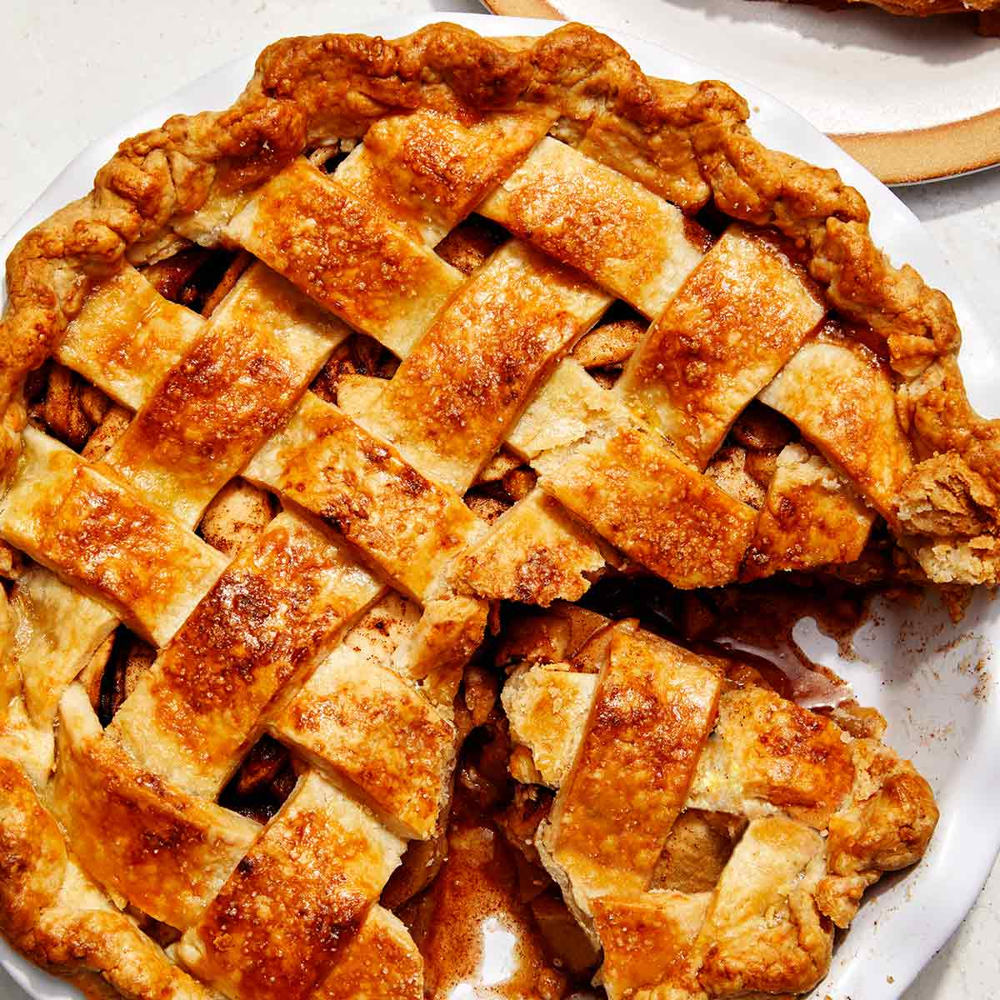

Chocolate Cake

Hotteok

Ingredients
- water
- 2 tbs white sugar
- 2 ts dry yeast
- ½ ts kosher salt
- 1 tbs vegetable oil
- 2 cups and ½ cup of all purpose flour
- ½ cup turbinado sugar (or brown sugar)
- 1 ts cinnamon powder
- 2 tbs chopped walnuts
Directions
Make hotteok dough
1.Place 1 cup of lukewarm water into a mixing bowl.2.Add white sugar, yeast, kosher salt, vegetable oil, and stir it well.
3.Add 2 cups all purpose flour and mix it with a rice scoop, or by hand.Let the dough rise. It should sit with the lid closed at room temperature for 1 hour.
4.After an hour the dough will rise to double its size.
5.Knead it to remove the gas bubbles in the dough.
6.Let it rise for another 10-20 minutes.
Let’s make hotteok!
1.Knead the dough again to remove the gas bubbles.
2.Place and spread about ½ cup flour on your cutting board.
3.Put the dough on your cutting board and knead it.
4.Make it into a lump, and cut it into 8 equal-sized balls.
5.Take 1 dough ball, flatten it, put some filling in the center of the dough, and then seal it to make a ball.
6.Repeat this 8 times to make 8 stuffed balls. *tip: Use some flour from the cutting board to prevent your fingers from sticking to the dough
7.Heat up your non-stick pan over medium heat and add some vegetable oil.
8.Place 1 ball on the pan and let it cook for 30 seconds.
9.When the bottom of the dough ball is light golden brown, turn it over and press the dough with a spatula to make a thin and wide circle (about the size of a CD).
10.Let it cook about 1 minute until the bottom is golden brown.
11.Turn it over again and turn down the heat very low.
12.Place the lid on the pan and cook 1 more minute. The brown sugar filling mixture will be melted to syrup!hotteok (호떡) Serve hot!
Make filling (for 8 hotteok)
Mix the turbinado sugar, cinnamon powder, and walnuts in a bowl.
*tip: you could use mozzarella cheese for stuffing. Invent your own fillings with your favorite ingredients! -Maangchi Recipes
Apple Pie
Ingredients Crust 1 1/3 cups spelt, white, oat, or gf ap flour 1/4 cup sugar of choice (or erythritol for sugar free) 1/4 tsp each: cinnamon and salt 1/4 cup oil or butter spread 2 tbsp water Filling 4 cups peeled apple, sliced thin (400g) pinch stevia OR 1 tbsp pure maple syrup, honey, or agave optional 1/2 cup raw walnuts, diced small optional 1/2 cup raisins Crumble Topping 1/2 cup rolled oats 1/2 cup spelt, white, oat, or gf ap flour 1/2 cup sugar (or erythritol for sugar free) 1/4 cup oil, OR 1/4 applesauce for fat-free 1/8 tsp salt Instructions This recipe calls for an 8-inch springform, but it also works in a 9-inch if you double the entire recipe.